During my master thesis, I designed a passive silicon interposer in Virtuoso, using the open GPDK45 technology. The interposer connects two test chiplets with 16 pins each, while 2 differential pairs are routed on the interposer. Different routing topologies where tried (microstrip, coplanar waveguide, stripline), and the design was simulated in HFSS 3D Layout. S parameters were extracted and compared, showcasing the advanced shielding offered by the coplanar topology (reduced losses and crosstalk).
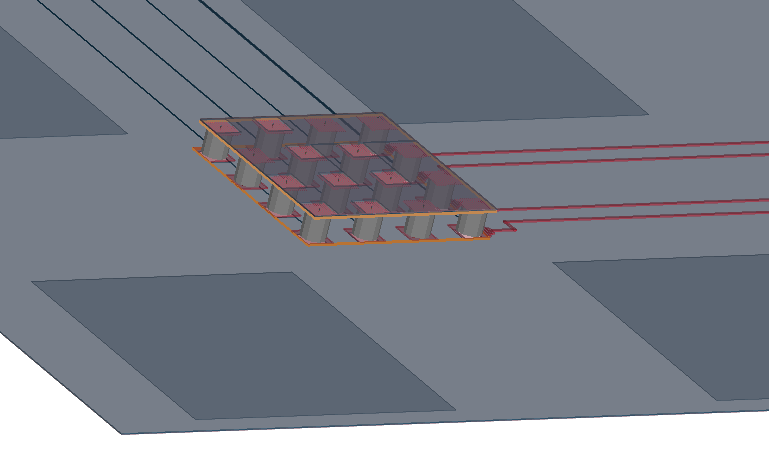
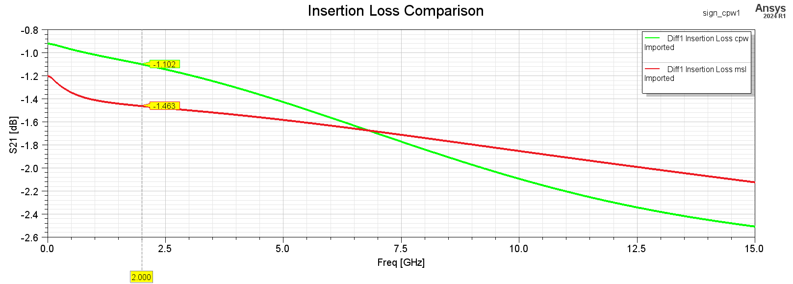
A power distribution network was also designed. The desired maximum resistance of the power network is calculated to be 20 Ohms, using the following formula for a maximum current of 1 mA, and a VDD of 1V. The ripple tolerance is set to be 10%.
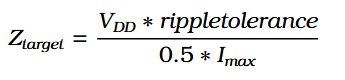
The resistance of the power network is found to be below 18 Ohms for all frequencies of interest. Thus, the target for resistance is met.
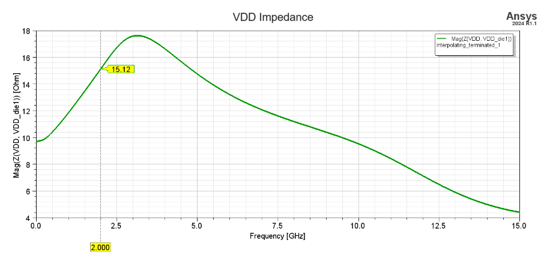
The voltage drop and ground bounce is simulated using the schematic below. For a current of 5 mA, the voltage drop is still less than 10%.
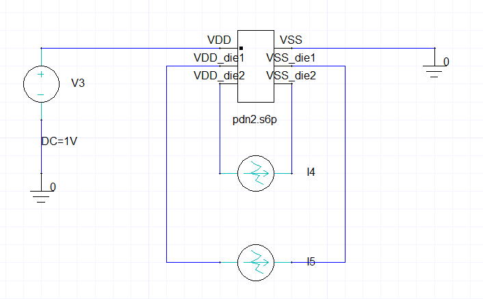
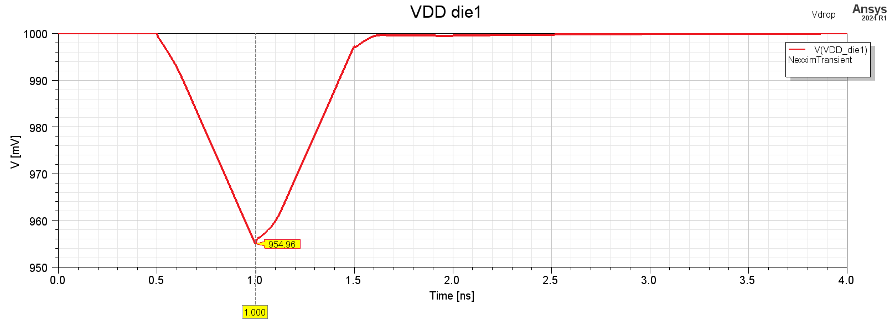
A parametric sweep was run to find the maximum current so that both the power drop and ground bounce are less than 10%.
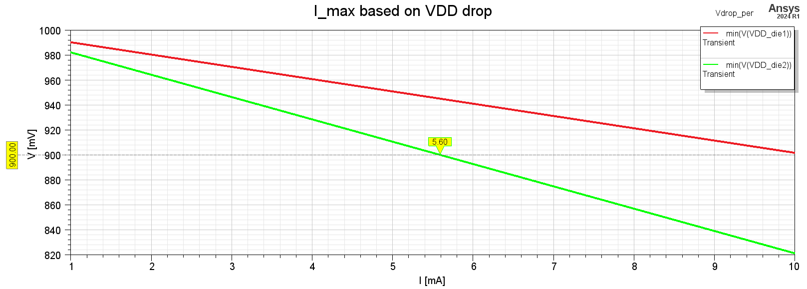
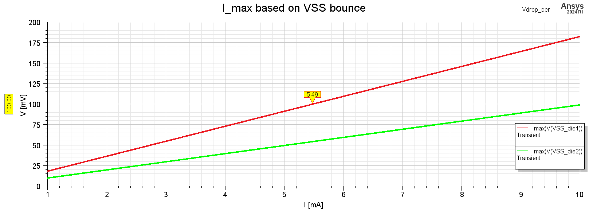
The maximum current for die1 is 12.51 mA, and for die2 12.02 mA.
Finally, assembly with the test chiplets was performed, and the new insertion loss was calculated. The eye diagram was constructed, with the circuit still passing the mask requirements.
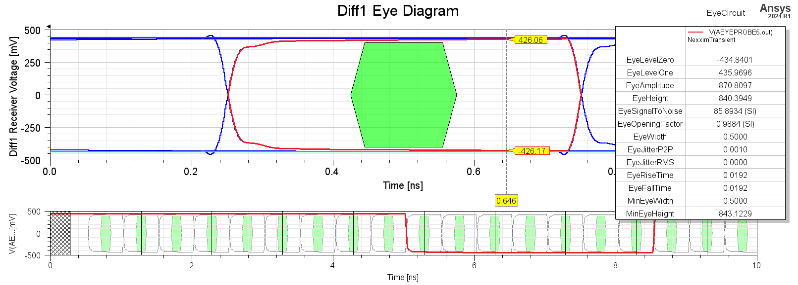
A circuit analysis was used to simulate delay and voltage overshoot at the die.
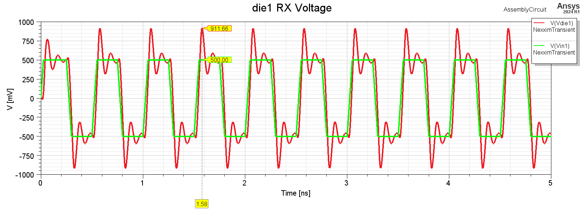
When adding a termination resistor of 50 Ohm, the overshoot is minimized.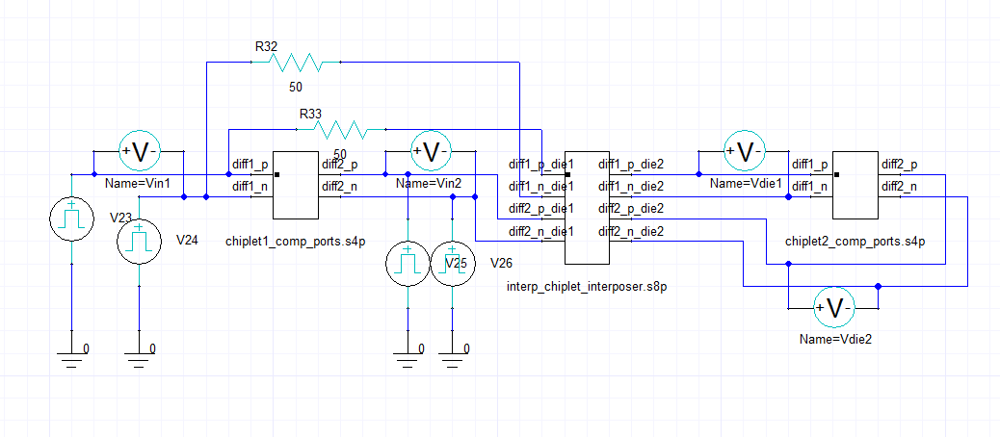
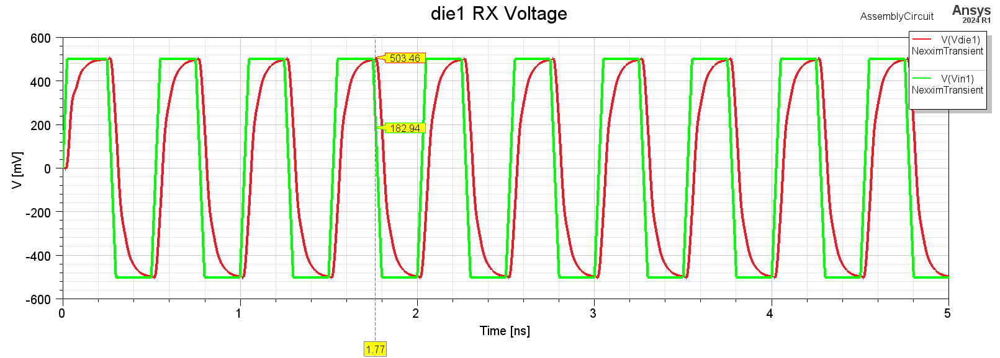
The results of the thesis were also presented in the ETCEI 2024 conference in Volos, Greece. The conference was organized by HETIA and included papers, posters and talks on advanced electronics, system architecture and emerging technologies.
The thesis document in Greek can be found here: https://ikee.lib.auth.gr/record/356361/?ln=el.